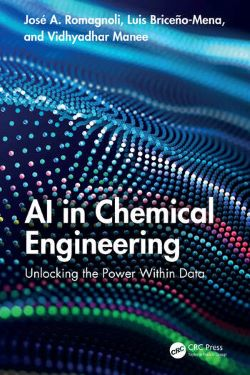

← Back to Resources
Textbook Resource
AI in Chemical Engineering: Unlocking the Power Within Data
This book explores how Industry 4.0 is transforming chemical manufacturing through AI and machine learning. It introduces essential concepts of unsupervised, supervised, and reinforcement learning, focusing on their practical applications to enhance efficiency, adaptability, and profitability in the chemical and process industries.
Readers will learn how AI can extract valuable insights from plant data, optimize process control, and develop predictive models for monitoring systems and advanced computer vision applications.

About the Authors
Prof. José A. Romagnoli
The Cain Chair in Process Systems Engineering in the Department of Chemical Engineering and is the director of the Laboratory for Process Systems Engineering at Louisiana State University. He earned a PhD in chemical engineering from the University of Minnesota. Dr. Romagnoli has authored more than 300 international publications and was awarded the Centenary Medal of Australia for his contributions to chemical engineering. His research covers all aspects of process systems engineering, including modeling of complex systems, advanced model-based control, intelligent process monitoring and supervision, and plant-wide optimization.
Luis A. Briceno-Mena
He works at Dow on their Machine Learning Optimization and Statistics team. He received his Ph.D. in Chemical Engineering from Louisiana State University.
Vidhyadhar Manee
Vidhyadhar is a Senior Scientist in Process Research at Boehringer Ingelheim Pharmaceuticals Inc. He received his Ph.D. in Chemical Engineering from Louisiana State University.